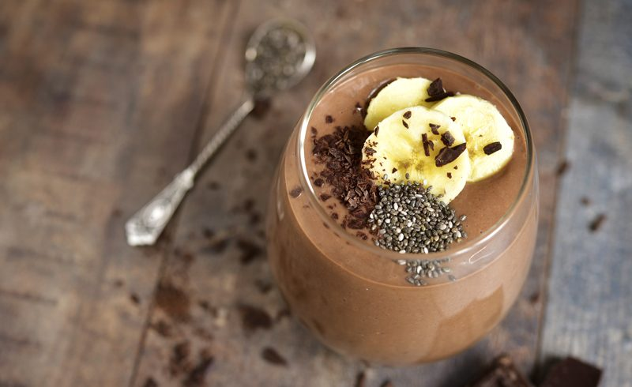

Cacao Nib Banana Malt Oat Smoothie
~ raw, vegan, gluten-free ~
I have been challenged to create some raw “fast food” for a dear friend of mine. Her family hasn’t focused on a raw food lifestyle in the past but is now looking for ways to add healthier choices into their diets. Yay! I couldn’t be more tickled to take on such a challenge.

Overwhelmed with their chaotic mornings rushing to get out the door, a morning energy booster was in need. So, I got out my pen and pad (AKA Mac Laptop haha) and got busy creating some smoothie recipes that would be energy creating, great-tasting, belly sustaining, and easy to prepare.
Now I realize that there are hundreds of formulas that can be used when creating smoothies. But this one and a handful of others that you will find here were designed for their health benefits and your taste buds.
I also designed this recipe so that it can be made up ahead of time and kept in the fridge for up to 2-3 days, or it can be frozen for 2-4 weeks. So, keep in mind that you can make as many of these up ahead of time in freezer-proof mason jars, which will give you raw “fast food” for breakfast! Just mix up the flavors to create variety.
Have a long and busy day planned tomorrow? Take one out of the freezer and place it in the fridge. Come morning, grab the one out of the refrigerator to drink for breakfast, and then grab one out of the freezer to take with you. By the time noon rolls around and you start to get those hunger pangs or a simply a drop in energy level… your smoothie will now be defrosted and waiting for you. Give the jar a shake and slurp up! Enjoy!
Ingredients:
Yields 3 cups
Preparation:
- In the blender combine the almond milk, oats, banana, chia seeds, cacao nibs, maca, cinnamon, and stevia.
- Blend on high 30 seconds.
- Pour and drink!
- You can make this smoothie in advance and store it in the fridge or freezer. I used a quart mason jar. If you want, you can create 2 smaller smoothies by splitting them into 2 / pint jars. Put the lid on tight and freeze. Just double-check that the jars are freezer-safe.
Learn how to design your own smoothies by reading through my Template for Designing Smoothie Recipes.
© AmieSue.com